Discord Decoded
Discord is an online communication tool similar to programs such as Skype or TeamSpeak, or professional communications platforms like Slack. It supports video calls, voice chat, and text, allowing users to get in touch however they please. In this manual I'll try to cover everything you possibly need in order to use it. If you have any questions after checking out the manual and the FAQ feel free to send me a mail on the address tim.broos@becode.org with the subject "Discord Decoded".

Overview
1. Getting started
2. What's where
3. Settings
4. Friends
5. Servers
- Joining a server
- Inviting to a server
- Navigating servers
- Nicknaming a server
- Changing your nickname on a server
- Grouping servers
6. Communication
- Private communication
- Server communication
- Text channels
- Voice channels
- Mentioning
- Streaming screen / video
- Joining a livestream
- Muting / deafening
- Messaging tricks
7. Notifications
8. Privacy settings
9. Server administration
- Making a server
- General configuration
- Inviting to a server
- Creating channels
- Roles / Permissions
- Audit log
- Custom emojis
- Adding bots
10. FAQ
1. Getting started
Browser or application?
Discord can be run as an application but also in the browser. You don't even need an account if you decide to run it in the browser. If you want to use Discord on a regular basis I do heavily recommend using the application, since you then unlock it's full potential. Some settings are not available on the browser and to optimise your notifications you'll need the application. The app can also login when you start your OS, so that will save you some time.
Installation
You can install Discord on multiple OS's but also on your smartphone or tablet. You can download and install it through this link or one of the links below depending on your OS.
⚠ Download links below ⚠
Linux deb
Linux tar.gz
Windows
Mac
Android
iOS
Logging in
Now that you've installed Discord and you open it, the first thing you'll see is the login screen. It should look something like the image below. If you've already made a Discord account you'll be able to login, if you haven't you can register here. Try logging in!
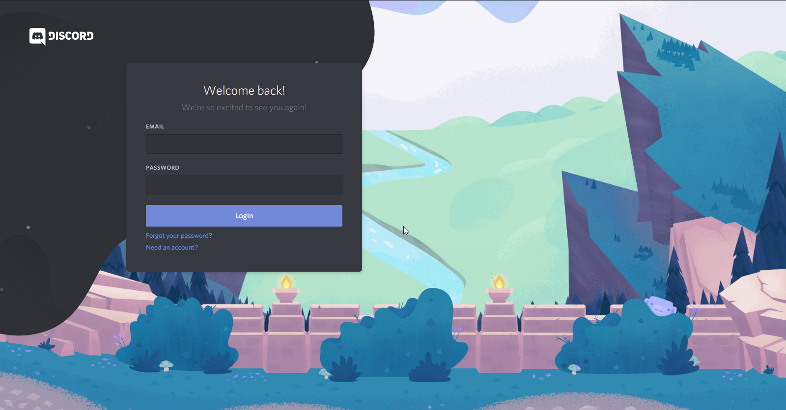If you logged in successfully you'll first see the Discord loading animation and afterwards you'll enter the application. Now it looks like this:
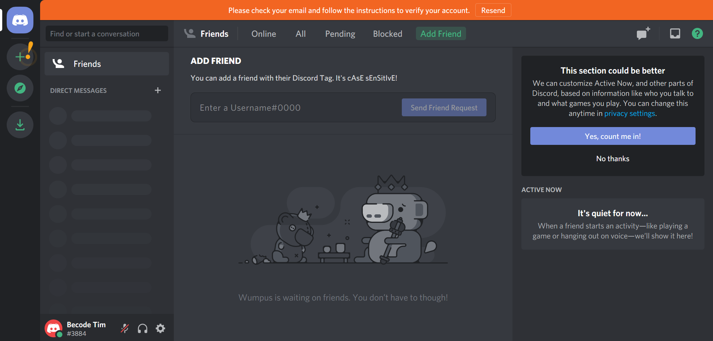Before we can start exploring all the features, you first need to join a server or make a server. After you've done that you'll get a view that looks like the following image, you're now ready to explore Discord.
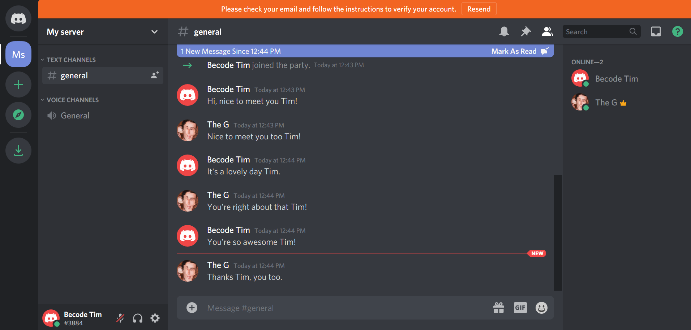2. What's where
Messages
Now that you're inside a server let's start exploring all the fields you'll need. Let's start with the messages. First you need to know that there's 2 ways to send messages, publicly through a server or privately through a direct message.
Since you're now inside of the first server you've joined let's check out the public messages. In the image I've marked the section where you can view messages and send messages.
The area marked in red will display messages sent in a server in a specific channel. There might be multiple channels inside a server, for example a channel where announcements are made and a channel where people can chat freely.
The area marked in green is the input field for sending messages. Depending on in which channel you are the message will be delivered to the same one.
You can also send private messages, click on the home button in the top left to go to your direct message list. It looks like someone sent me a message just now! I got a notification and that person's profile picture has appeared in my direct messages. Click here if you want to learn how to start a direct message with someone privately.
You can reply to this person by clicking their picture, it will open your conversation with that person. It looks fairly similar to the server messages, but nobody except you and the person you're talking to have access to those messages.
Servers
At the moment you only have one Server but soon you might have a couple. In the area marked in red in the image you'll find the server list. You can navigate from server to server by clicking their icons.
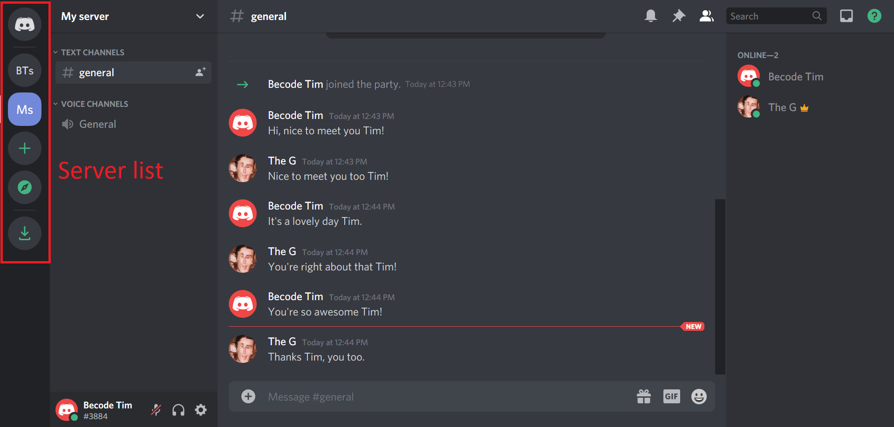Channels
Each server typically has 1 voice channel and 1 text channel at least, but a lot of them have more. Voice channels are meant to communicate through voice activity and text channels through text. If you want to know more about them, check out the channel section. In any case, you can find them in the green area on every server. Voice channels have a leading speaker 🔊 icon and text channels have a leading hashtag #.
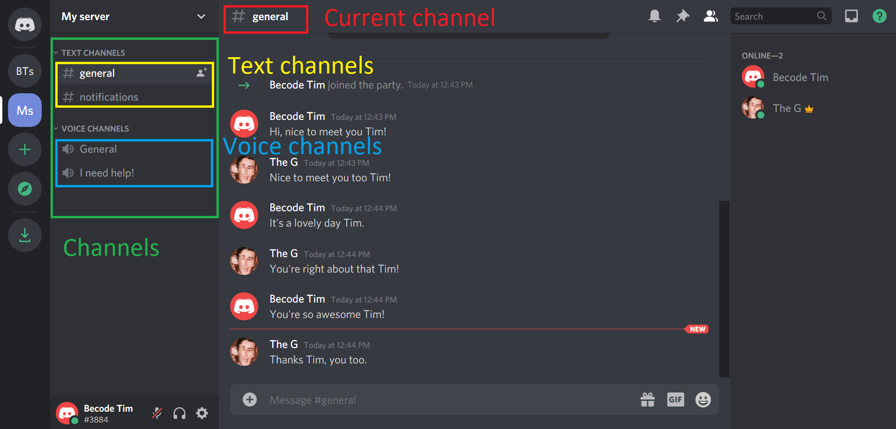Friends
To go to your friends you have to click on the home button and then on the friends button. You'll then see your friends list, if it's empty and you want to add some friends, click here to find out how to do that. In the blue section you can toggle between your online / pending / blocked and all friends. If you want to find out more about friends click here.
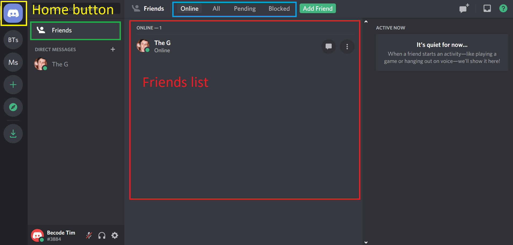Profile and Settings
To go to your profile, and all other settings for that matter, click the small gear ⚙ icon next to your profile picture in the bottom left.
From there you can change a lot of your profile settings and other settings. If you want to know more about changing your settings click here.
3. Settings
Microphone, audio and camera setup
If you're lucky, your settings are all automatically setup for you. Sometimes however, you'll need to change your input / output / video device. If you go to your settings you'll find a category App settings. In that category you'll find a tab that says "Voice and Video", go ahead and click on it.
Here you'll find everything you need considering your input (microphone), output (audio) and video (camera) settings.
Device configuration
If you click the dropdown on either the input or output device, you'll get to see all the devices available. Sometimes you only have one microphone and one audio device, so then selecting that one or the default works fine.
However, sometimes you have multiple devices connected. In that case you'll have to figure out which one to choose. After you've done that and selected the device you wish to use you can move the slider below to customize how loud you want your microphone / audio device to be. After that have a little Mic check, click the "Let's Check" button.
Now that you've set up your microphone we can add some extra settings to it, those are not always necessary but it's good to know of them. There's 2 ways to talk through your microphone.
Voice activity
The first one is the default option, through voice activity. This means that when Discord detects you are saying something it will get put through and people hear you automatically. The sensitivity of Discord detecting you is done automatically by default but you can also determine that yourself by disabling that feature. Next you'll get a green / orange bar with a slider on it. Try talking into your microphone, you'll see how loud you are. To achieve the optimal result you want to place the slider slightly below your average talking loudness. This means that noise in the background won't get through and your voice will.
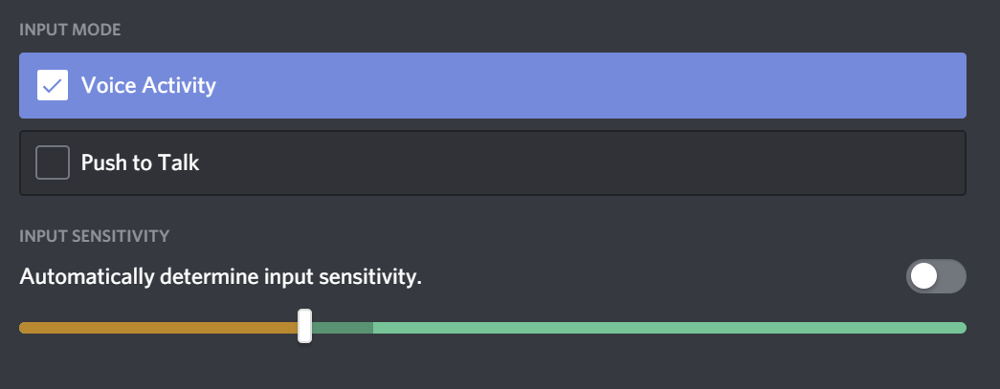Push to talk
Secondly there's the "Push to talk" option. This means what it says, you'll choose a button and when you press that button people will hear you. To set this up, choose the push to talk option and afterwards record a keybind by pressing that button and when it's recording press the button you want to bind. After that use the slider next to it to determine the release delay. If you want to stop talking immediately after releasing the button you can slide it to 0 ms, if not slide to the amount of ms you want to keep being heard after releasing the button.
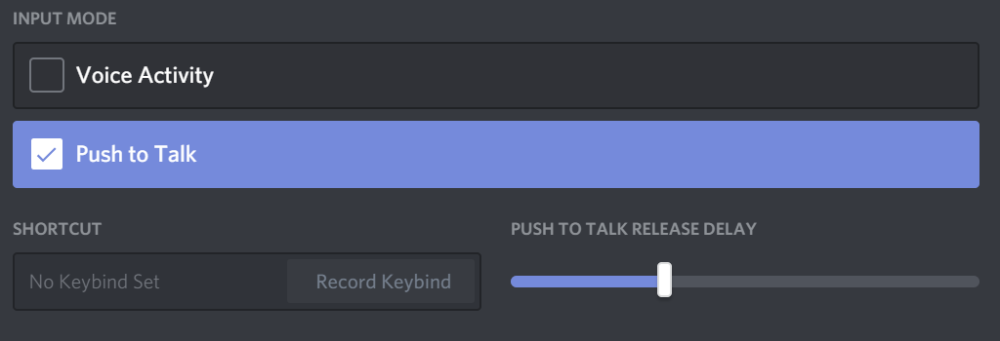Camera settings
Now that your audio and microphone are set up it's time to take a look at the camera settings. Scroll down a bit and you'll see the Video settings section. Here you can choose which camera Discord has to use and test it by pressing the blue test button. Most of the time you'll only have one camera connected, but in case you have multiple connected you'll need to choose the one you want to use.
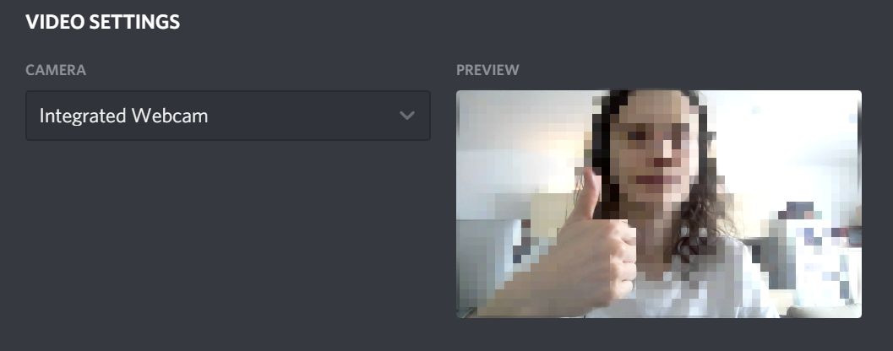Profile Settings
To change your profile picture, email and username go inside the settings by pressing the gear ⚙ icon. Then go inside the tab User settings. Here you can press edit button. Next, you can change your profile picture by clicking on it, then you choose your new picture through your OS interface. You can also change your email and username by changing the input fields. You'll need your password to change them though. If you want to change your password you can also do that by clicking on it in the view. If you're done click save and your changes will update.
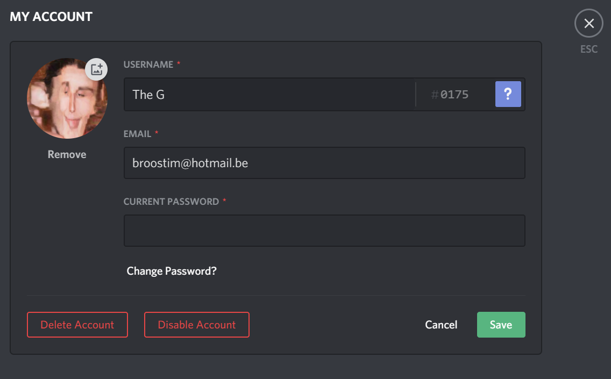Discord appearance
In your settings, under the category App settings, you'll find a tab that says Appearance, click on it.
In this view you can choose your theme to be Dark or Light. Under the message display title, you can choose either Cozy or Compact mode. Cozy will display pictures and has more room in between messages. Compact will reduce spacing and remove profile pictures in messages.
Finally, you have the Accessibility section. There you can change the chat font size, space between message groups and zoom level by moving the sliders accordingly. Play around with them and find out what fits best for you!
Language
In your settings, under the category App settings, you'll find a tab that says Language, click on it. In this view you can select any language that's inside the list.
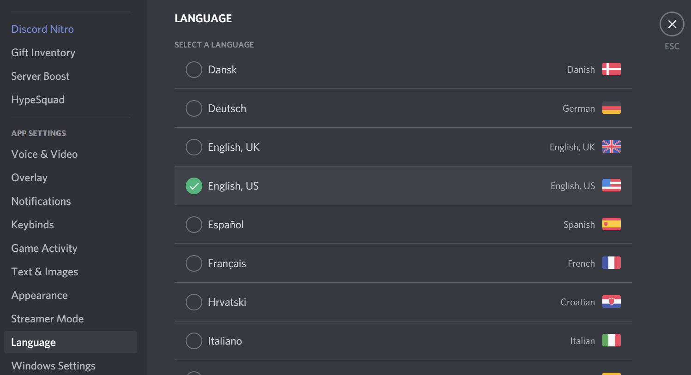Status message
To change your status, click on your profile picture in the bottom left. Then select "custom status". After that, fill in your custom status and press Save. You can optionally choose for how long this status should remain untill it gets cleared in the "clear after" option.
4. Friends
5. Servers
6. Communication
7. Notifications
8. Privacy settings
9. Server administration
10. FAQ
- There's some loud music / noise when I join a call, how do I turn it off?
- In the voice channel there might be a bot playing music or someone making loud noises, you can mute it by right clicking the mute target.
- How do I selectively mute notifications?
- There's 2 types of notifications, general and server notifications. Check this out if you want to know more about managing them.
- I can't hear anybody, how come?
- There's multiple possibilities. First check if you are deafened. If it's the case, un-deafen yourself. If that's not the case take a look if the person you're talking to is muted.
Finally, if you still don't hear anybody there's something wrong with either your audio levels or your settings. Try first turning your volume all the way up. If you still don't hear anything there's something wrong with your settings. - Nobody hears me, how come?
- There's multiple possibilities. First check if you are muted. If that's not the case take a look if the person you're talking to is deafened.
Finally, if people still don't hear you there's something wrong with either your microphone or your settings. You can check if your mic works by visiting this website and following their instructions. If your microphone works there's something wrong with your settings - How do I organise a presentation in Discord?
- First of all you'll need to let your audience know where to find you. You can privately contact each one or you can mention a group of specific people. After that you'll join a voice channel together with your audience. You'll probably want them to mute themselves so you can present without noise in the background (unless they have a question of course).
Next, the choice is up to you as to how you wish to present. You're ready to give a presentation with your voice only if you prefer but you can also stream your camera. What I prefer most is sharing my screen and presenting something on my screen to the audience. - Someone called me privately but I didn't notice, can I turn on the calling sound for it?
- Yes you can, but only if you are friends with this person. If you're not you'll get a notification that's the same as a text message. If you are friends though you'll get a popup window when that person calls you.
- My microphone is making a lot of noise, can I filter it?
- Yes you can! It's in your microphone settings. Change your input sensitivity.
- There's so many servers in my list, how do I manage them?
- You can make folders and put your favourite servers together, your gaming servers, your work-related servers, etc. Just drag the server over another server / folder you want to group it with.